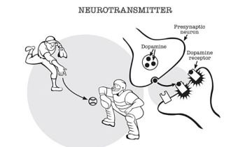

Dopamina (o que é, e como usar a seu favor)
1 – O que é a Dopamina
Antes de Saber o que é a Dopamina, você precisa saber o que é um neurotransmissor. Que é como a Dopamina é classificada.
Neurotransmissor: Os neurotransmissores são como futebol. O atacante é o neurônio pré-sináptico. O Goleiro é o neurônio pós-sináptico. O espaço entre o goleiro e o artilheiro é a fenda sináptica. Assim como a bola é joagda entre o atacante e o goleiro, os neurotransmissores conectam a distância entre os neurônios, possibilitando a comunicação entre eles.
Existem muitos neutransmissores importantes, mas esse vídeo é sobre um em específico. A Dopamina.
A dopamina não é o único neurotransmissor envolvido no processo de gratificação, mas a maioria dos neurocientistas concorda que é um dos mais importantes. A Dopamina pode desempenhar uma função maior na Motivação para conseguir uma gratificação, (Querer mais do que gostar).
Exemplo: Camundongos geneticamente modificados, incapazes de produzir dopamina, não buscarão alimento e morrerão de fome, mesmo quando a comida é colocada a centímetros da sua boca (Porque eles não tem Dopamina, portanto eles não tem Motivação). No entanto, se a comida for colocada diretamente em sua boca, os camundongos mastigarão e comerão, PARECENDO SENTIR PRAZER.
Ta Okay pessoal? Então vamos considerar que (Dopamina=Motivação).